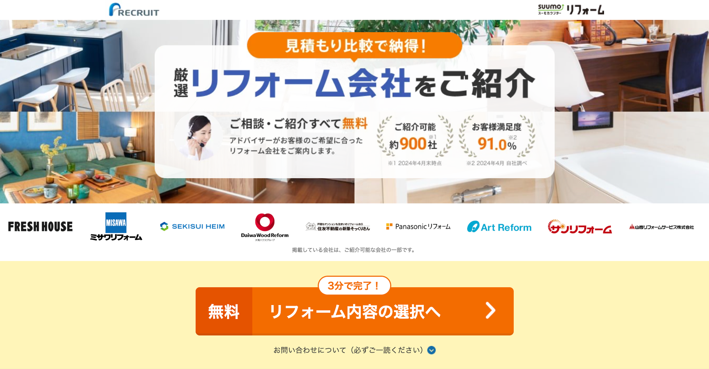
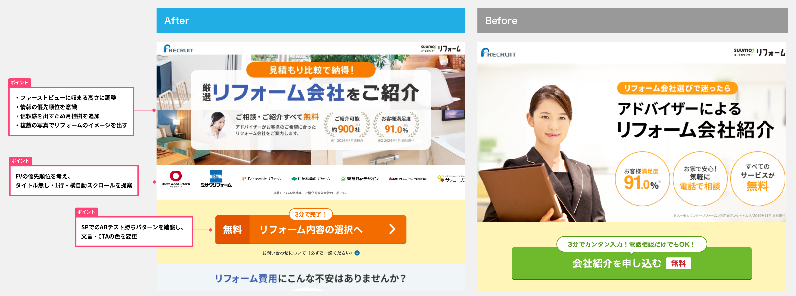
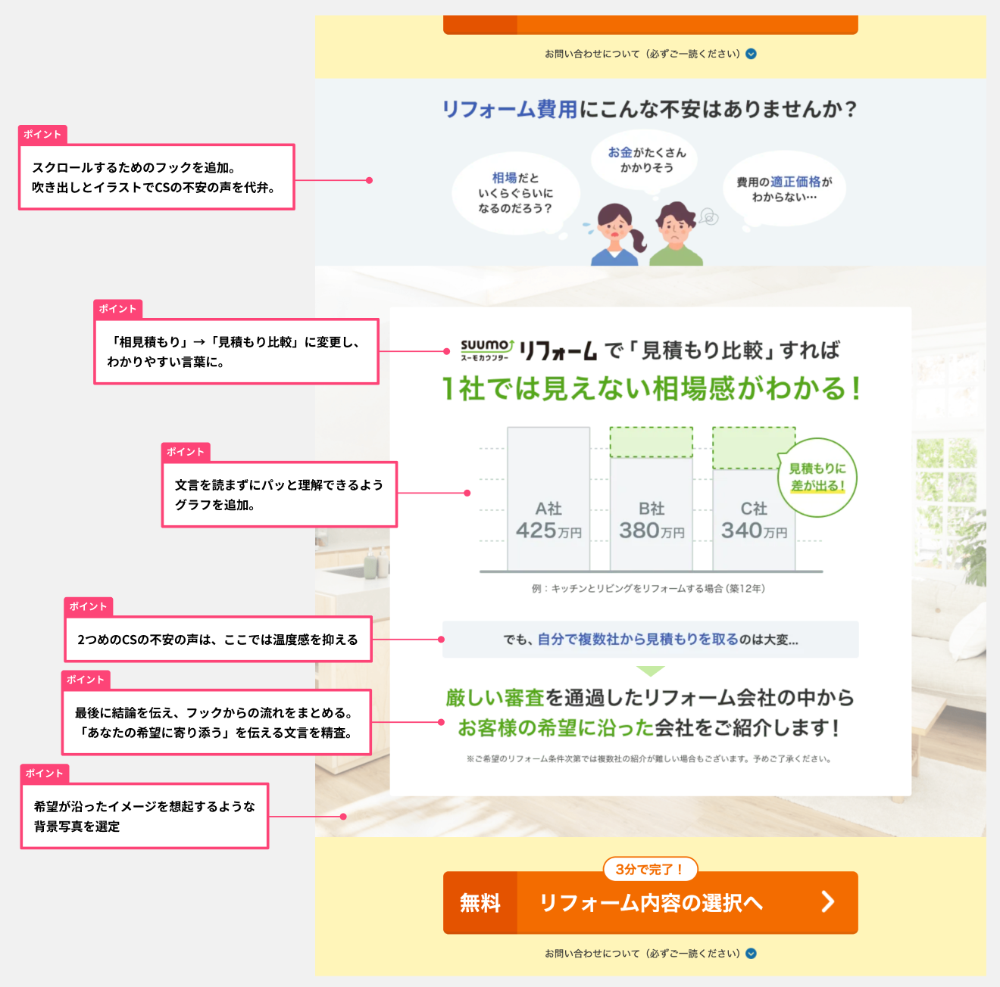

PC・SPのCVR向上を目的としたエンハンス案件を担当しました。
案件ごとにディレクターやプランナーと目的を確認し、デザインを検討しました。
その中から下記2案件を抜粋しています。

- 制作媒体
- PC・SP
- 制作期間
- 1~2週間
- 制作人数
- ディレクター1名、デザイナー1名（担当領域）
ビジネスへの寄与
- デザインをリニューアルし、CVRとスーモリフォームの認知度向上に貢献
- お問い合わせ設計を見直し、離脱を防止
こだわりPOINT
- ターゲット層に合わせたデザイン
- リフォームに対する不安を解消するストーリー設計
①ファーストビュー改修
概要：レガシーなデザインの改修を行い、信頼感を高めてCVR向上を狙う
結果：CVR114%向上
工夫：ファーストビューに収まる高さにしつつ、情報の優先順位を検討。

②不安解消コンテンツ作成
概要：「リフォームの適正価格」が分からない状態を解消し、ユーザーに相見積もりの重要性を伝える
結果：CVR110%向上
工夫：情報の流れを意識し、理解促進と読む負担緩和のためグラフを作成
